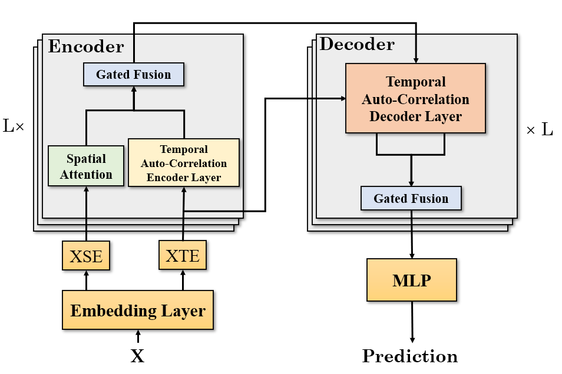
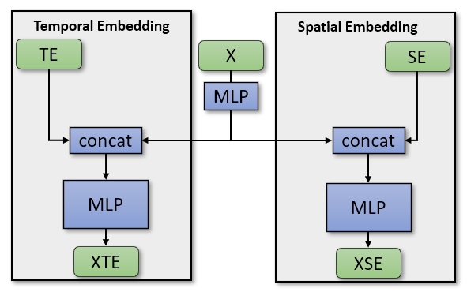
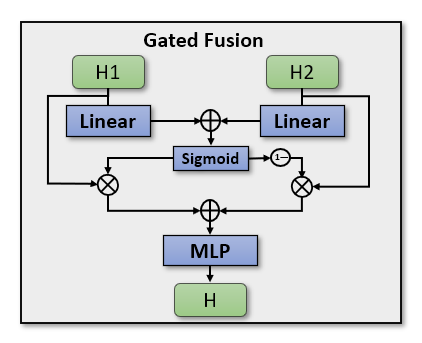
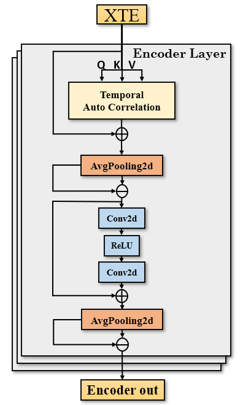
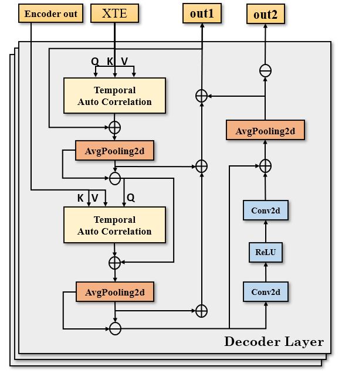

Graph Attention auto relation Fusion network——GAF

Project Structure
xxxxxxxxxx301- data 数据集2 - dataset_name3 - SE_{dataset_name}.txt [num_vertex, dims=64]4 - TE_{dataset_name}.npz [seq_len,2]5 - {dataset_name}.npz [seq_len, num_vertex]6 - y_hat7 eval_plot模式下，保存测试集预测结果8 x [num_samples, steps, num_vertex]9 y [num_samples, steps, num_vertex]10 y_hat [num_samples, steps, num_vertex]11- config 配置文件12- ckpt 模型保存文件13- img14 - plot 训练过程train_loss和val_loss绘图15 - vision 预测结果保存16 - *.img markdown文件图像17- log 运行日志，linux服务器上用重定向保存终端输出信息，代码中没有用log模块18- model 模型19- scripts20 - node2vec 生成SE文件，图节点向量表示21 - notebook22 调试代码，数据预处理，可视化23 - cost2adj_files.ipynb 将数据集中csv文件处理后生成adj files24 - meta-la_process.ipynb TE生成示例，weekofday[0,7),timeofday[0,T),T表示一天的时间步25- utils 数据集、功能函数定义26- trainer 模型训练、推理过程封装27- main.py 运行主代码28- checkpath.sh 补全项目目录结构29- train.sh 模型训练执行脚本，挂服务器后台，输出重定向至日志文件30- eval.sh 模型推理执行脚本Related Work
GMAN
空间嵌入向量用node2vec方法生成
对于时间序列中每个时间步的编码方式：周几的编号
[0,7)+ 当天中所属时间步编号[0,T)时间嵌入向量使用one-hot编码，最后嵌入向量拼接后使用MLP训练即可
整体参考Transformer结构
Gated Fusion取自GRU，合并两路输出值，利用sigmoid函数生成0~1的权重系数，简要表达如下：
key：Transformer, Gated Fusion, Spatial Embedding.
模型结构图如下：

Embedding

Gated Fusion

Spatial attention
…
Auto Correlation
…
Encoder Layer

Decoder Layer

Dataset
PEMS-BAY
xxxxxxxxxx31SE_PeMS-BAY.txt (325, dims=64)2TE_PeMS-BAY.npz (52116, 2)day-of-week 0-7 time-of-day 0-2883PeMS-BAY.npz (52116, 325)(52116, 325)
2017年1月1日~2017年6月30日，采样间隔为5分钟
PEMS04
xxxxxxxxxx31SE_PeMS04.txt (307, dims=64)2TE_PeMS04.npz (16992, 2)day-of-week 0-7 time-of-day 0-2883PeMS04.npz (16992, 307)(16992, 307, 3) [flow, occupy, speed]
2018年1月1日~2018年2月28日，采样间隔为5分钟
PEMS08
xxxxxxxxxx31SE_PeMS08.txt (170, dims=64)2TE_PeMS08.npz (17856, 2)day-of-week 0-7 time-of-day 0-2883PeMS08.npz (17856, 170)2016年7月1日~2016年8月31日，采样间隔为5分钟
数据集来源
The datasets are available at Google Drive or Baidu Yun, provided by DCRNN, and should be put into the corresponding data/ folder.
Run
train
xxxxxxxxxx11./train.sh [dataset_name]eval
xxxxxxxxxx11./eval.sh [dataset_name]eval_plot
xxxxxxxxxx11python main.py --cfg_file="./config/[datasetname]/config_server.json" --run_type="eval_plot"该模式下保存了推理过程中的预测结果，包括x，y，y_hat，分别对应模型原始输入，真实值，预测值。
结果会保存在data/y_hat/目录下，接着执行scripts\notebook\prediction_vision.ipynb输出预测结果对照图。
其中PEMS08数据集预测结果如下图所示。

BRT为后来新增数据集（61天，每小时的客流数据），数据量较小，但是分布特征周期性显著，时间步设置为24（对应一天），根据历史一天的客流数据预测未来一天的客流数据，模型预测结果如下图所示。